Gestion du Département informatique
La nouvelle version de GDI est en ligne. Pour y accéder, vous devrez vous créer un compte (voir question Q1 ci-dessous). De plus, c'est une version du logiciel qui n'est pas finalisée. Il est possible que des bugs ou quelques fautes d’orthographe soient encore présents !
Vous pouvez, à tout moment, basculer d'une année scolaire à une autre en la sélectionnant dans la zone de sélection en haut à droite de la page.
Par rapport à la version précédente, il manque la partie "statistiques" et "budget" qui seront développées plus tard. De plus, une page regroupant l'ensemble des contacts avec leurs compétences sera également développée plus tard afin d'aider dans la recherche de vacataires.
Pour toute question ou remarque, vous savez qui contacter (Rémi S.) !
Vous pouvez, à tout moment, basculer d'une année scolaire à une autre en la sélectionnant dans la zone de sélection en haut à droite de la page.
Par rapport à la version précédente, il manque la partie "statistiques" et "budget" qui seront développées plus tard. De plus, une page regroupant l'ensemble des contacts avec leurs compétences sera également développée plus tard afin d'aider dans la recherche de vacataires.
Pour toute question ou remarque, vous savez qui contacter (Rémi S.) !
Q1 - Comment se connecter ?
Pour pouvoir vous connecter à GDI, vous devez enseigner au département informatique de l'IUTLCO.
Dans ce cas, rendez-vous sur GDI.
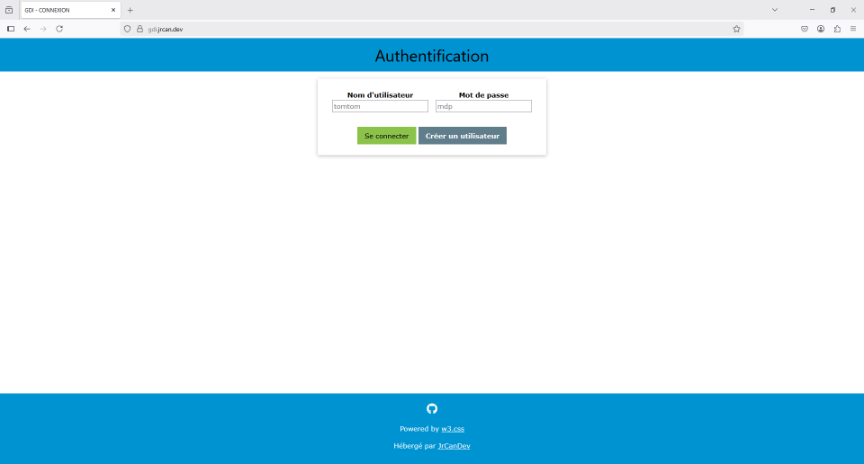
Si vous avez déjà un compte, cliquez sur "Se connecter". Renseignez ensuite le nom d'utilisateur que vous avez choisi ainsi que votre mot de passe.
Si vous n'avez pas encore de compte, cliquez sur "Créer un utilisateur" et remplissez le formulaire.
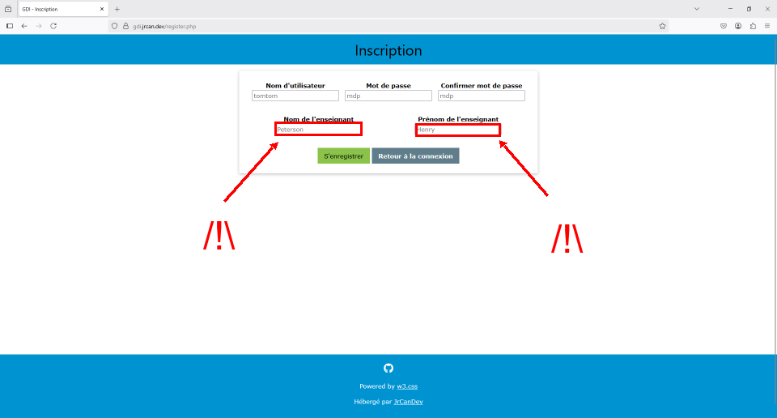
Vous pouvez évidemment choisir votre nom d'utilisateur et votre mot de passe. Attention aux champs entourés sur l'image ci-dessus ! Vous devez absolument indiquer vos nom et prénom avec précision. En cas d'échec, un message disant "Le professeur est déjà lié à un utilisateur" apparaîtra. Vérifiez que vous n'avez pas inversé nom et prénom. Si votre nom ou prénom est composé ou contient des caractères spéciaux, contactez Rémi S.
Une fois votre compte créé, vous pouvez vous connecter.
Après connexion, vous arrivez sur l'écran d'accueil ci-dessous.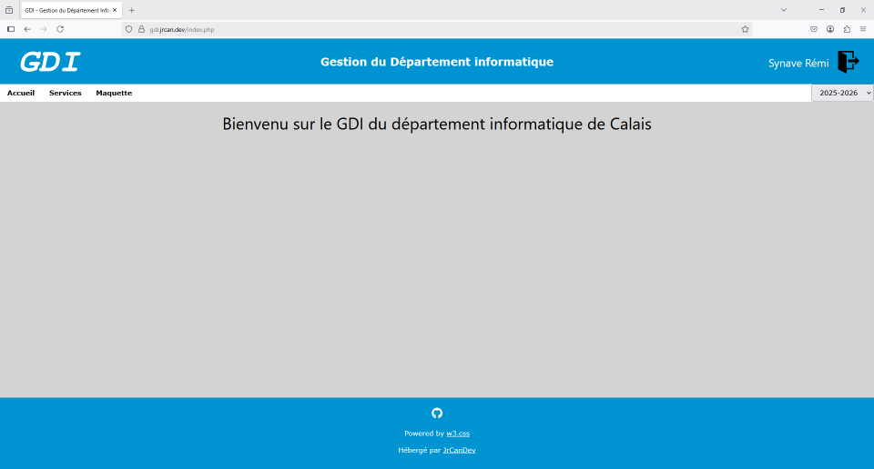
Dans ce cas, rendez-vous sur GDI.
Si vous avez déjà un compte, cliquez sur "Se connecter". Renseignez ensuite le nom d'utilisateur que vous avez choisi ainsi que votre mot de passe.
Si vous n'avez pas encore de compte, cliquez sur "Créer un utilisateur" et remplissez le formulaire.
Une fois votre compte créé, vous pouvez vous connecter.
Après connexion, vous arrivez sur l'écran d'accueil ci-dessous.
Q2 - Comment voit-on son service ?
Connectez-vous. Depuis la page d'accueil, cliquez sur "Services" en haut. Depuis la page des services, il est possible de consulter :
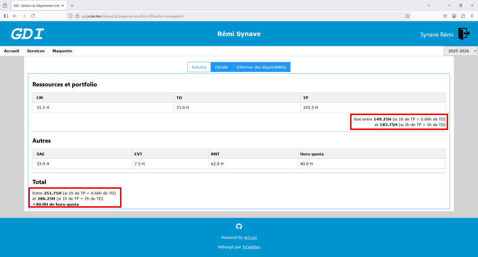
Dans le premier onglet, vous verrez un résumé du nombre d'heures de votre service.
Le second onglet, "Détails", vous donne le détail de votre service. Si vous ne comprenez rien à la section SAE, voir la question Q3.
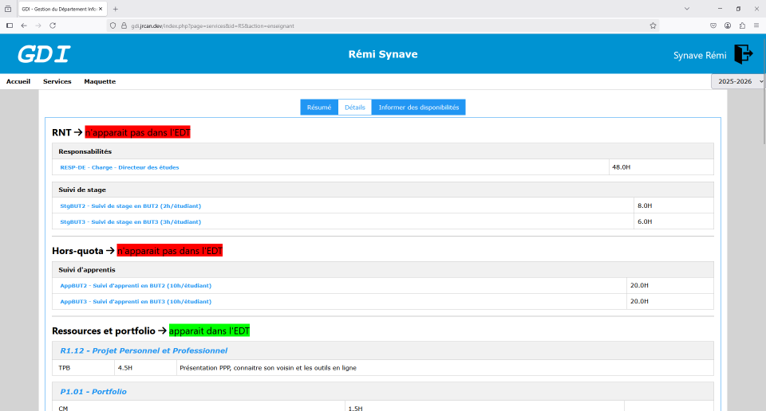
Le troisième onglet vous permet d’indiquer vos disponibilités afin que les personnes en charge des emplois du temps puissent vous placer sur des créneaux qui vous conviennent.
Finalement, si vous êtes vacataire, un dernier onglet est disponible, vous donnant toutes les informations nécessaires pour la création de votre dossier ULCO et votre compte numérique pour l'accès à Moodle.
Pour savoir avec qui vous travaillez dans une ressource particulière, cliquez simplement sur la ressource au milieu de la page des services.
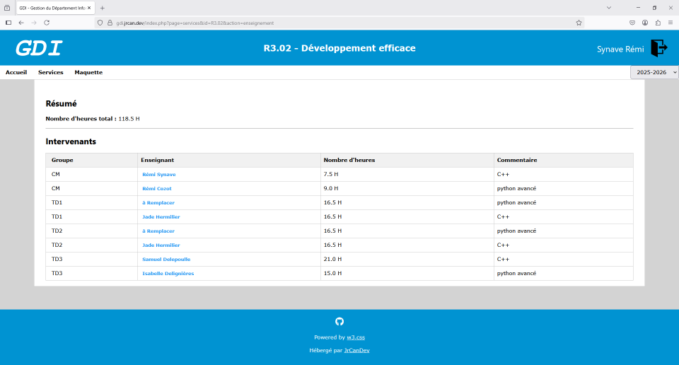
- les services par enseignant (en haut de la page)
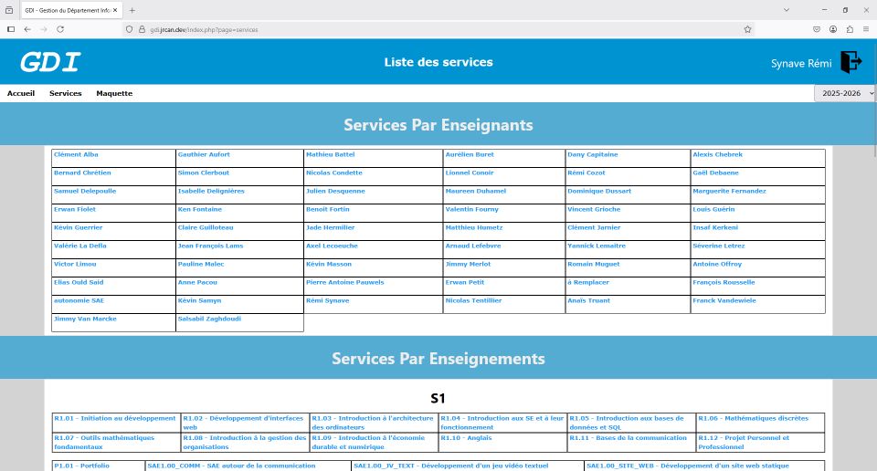 - les services par ressources/portfolio/SAE (au milieu de la page)
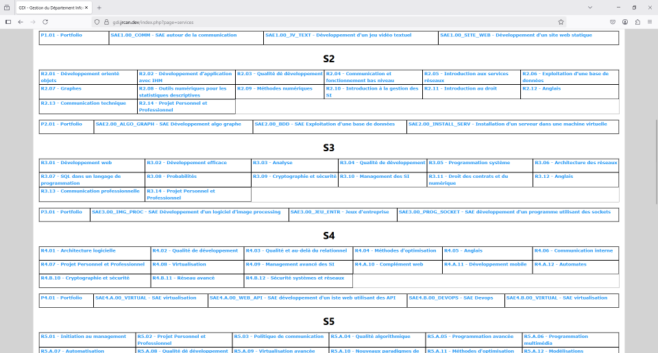 - les tâches administratives (en bas de la page)
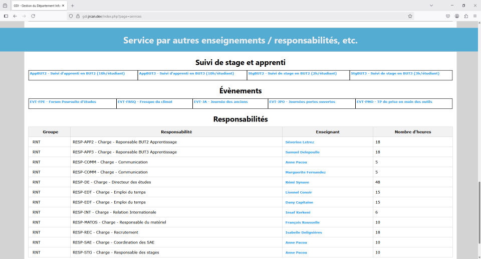
Dans le premier onglet, vous verrez un résumé du nombre d'heures de votre service.
Le second onglet, "Détails", vous donne le détail de votre service. Si vous ne comprenez rien à la section SAE, voir la question Q3.
Le troisième onglet vous permet d’indiquer vos disponibilités afin que les personnes en charge des emplois du temps puissent vous placer sur des créneaux qui vous conviennent.
Finalement, si vous êtes vacataire, un dernier onglet est disponible, vous donnant toutes les informations nécessaires pour la création de votre dossier ULCO et votre compte numérique pour l'accès à Moodle.
Pour savoir avec qui vous travaillez dans une ressource particulière, cliquez simplement sur la ressource au milieu de la page des services.
Q3 - Comment lit-on la section SAE de son service ?
Si vous regardez le détail des intervenants dans une SAE, vous verrez que vous avez un nombre d’heures égal à 0 affecté. Dans un souci de simplification de la création des emplois du temps, toutes les heures à faire par les étudiants ont été déclarées comme de l'autonomie.
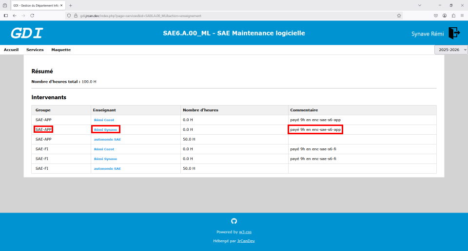
En parallèle de votre nom, vous verrez, dans la colonne "Commentaire", le nombre d'heures payées ainsi que le mode de paiement.
Vous retrouverez un résumé de vos interventions et des paiements de SAE sur votre page de service.
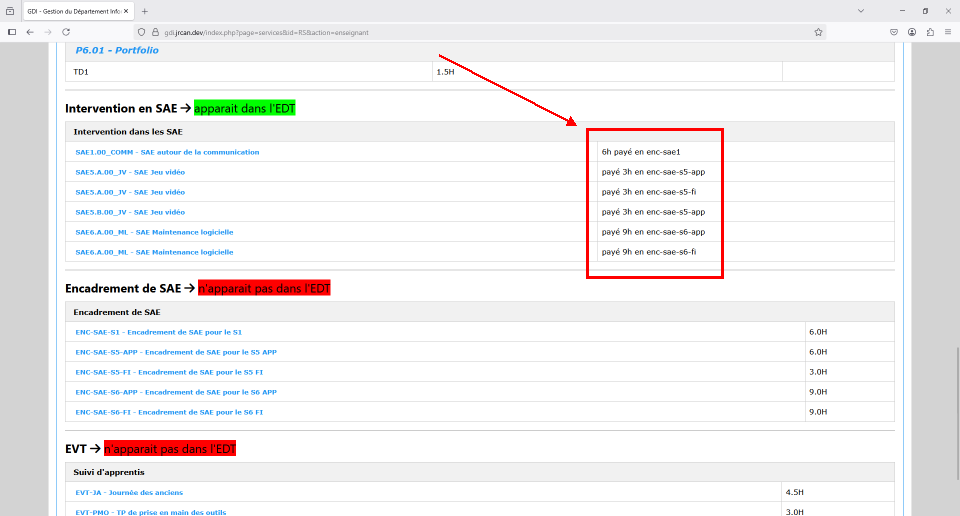
En parallèle de votre nom, vous verrez, dans la colonne "Commentaire", le nombre d'heures payées ainsi que le mode de paiement.
Vous retrouverez un résumé de vos interventions et des paiements de SAE sur votre page de service.
Q4 - C'est quoi la maquette ?
La maquette est une vue des enseignements regroupés par semaine. L'année scolaire commence à la semaine 35 ou 36 (fin août, début septembre) et se termine à la semaine 27 (fin juin, début juillet).
La maquette vous permettra, en fin d'année scolaire, de retrouver facilement les numéros de semaine de vos enseignements au moment d'entrer votre service dans la base de l'ULCO.
La maquette est disponible selon deux vues :
La maquette vous permettra, en fin d'année scolaire, de retrouver facilement les numéros de semaine de vos enseignements au moment d'entrer votre service dans la base de l'ULCO.
La maquette est disponible selon deux vues :
-
La première vue, celle sur laquelle vous arrivez en cliquant sur "Maquette" dans la barre de menu en haut de GDI, est la vue de toutes les semaines de l'année scolaire. Chaque case correspond à une semaine.
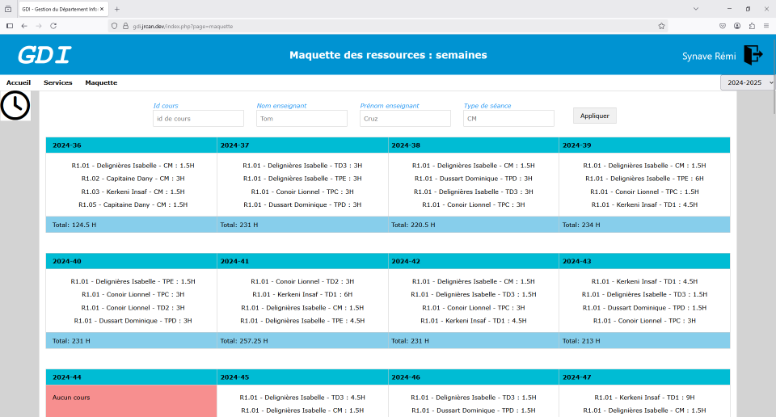 Un système de filtre permet de n'afficher que ce dont vous avez besoin.
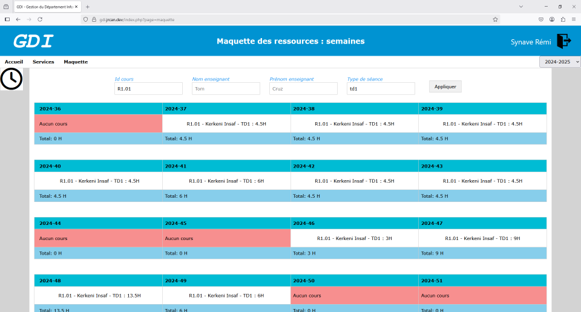 Sous chaque case se trouve le total d'heures affichées. Cette information sera utile aux créateurs des emplois du temps ! -
La seconde vue est accessible en cliquant sur l'icône en forme d’horloge située juste en haut à gauche de la page, sous "Accueil". Sur cette page, des onglets permettent de sélectionner le semestre à afficher. Pour ce semestre, il est possible de voir, en fonction de la ressource et du numéro de semaine, le nombre d'heures à placer.
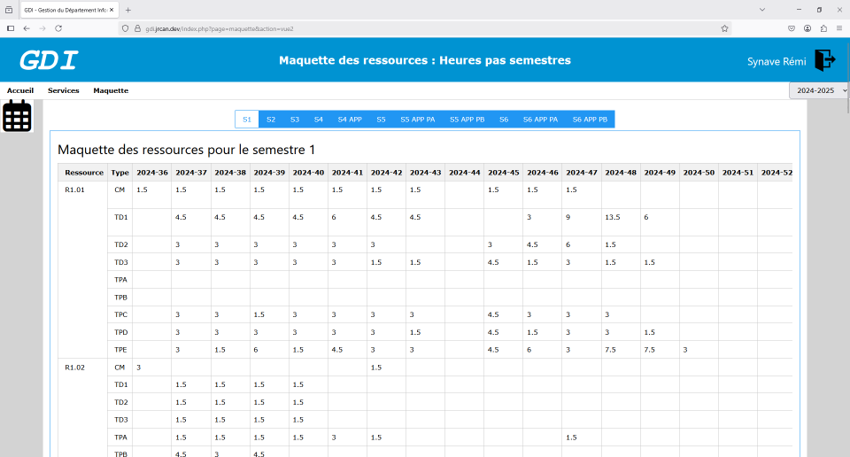 De plus, sur cette seconde vue, en bout de ligne, un total est affiché, et un code couleur indique si le bon nombre d'heures a été placé (vert), s’il manque des heures (rouge), ou s’il y a des heures en trop (bleu).
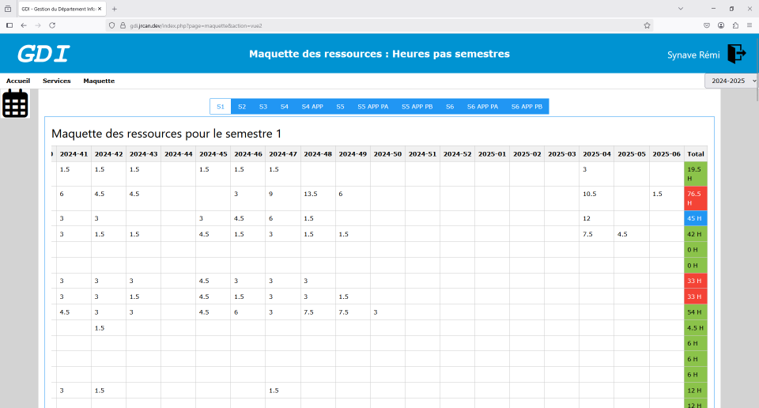
Q5 - Et qu'est-ce qu'on ne voit pas ?
Ça :

Les coordonnées des vacataires sont visibles par les personnes qui créent les emplois du temps.
La base de données est visible et modifiable par la personne en charge de la construction des services.
Les coordonnées des vacataires sont visibles par les personnes qui créent les emplois du temps.
La base de données est visible et modifiable par la personne en charge de la construction des services.